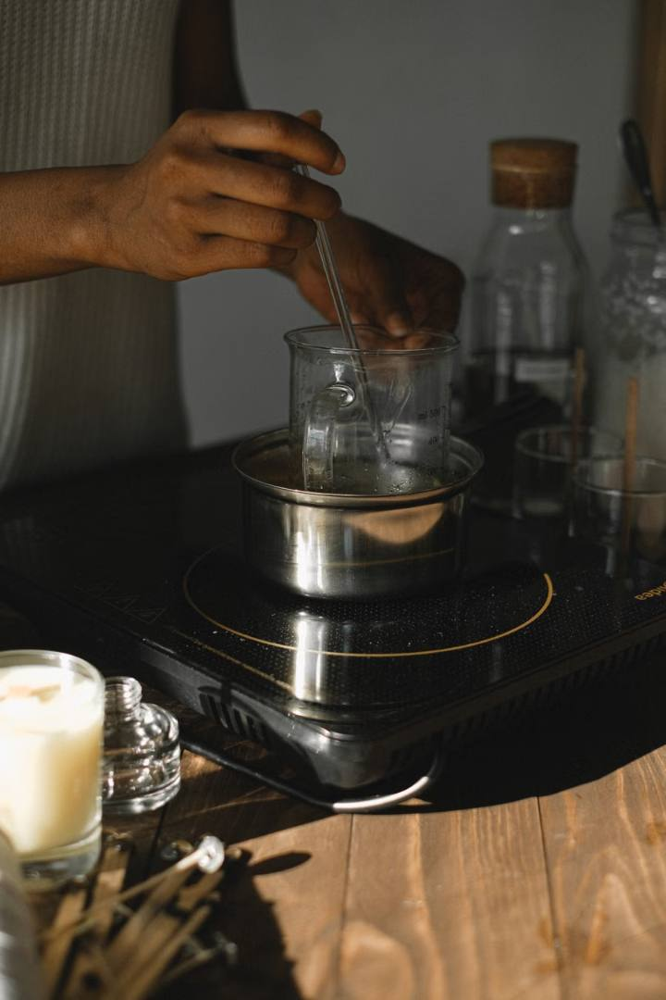
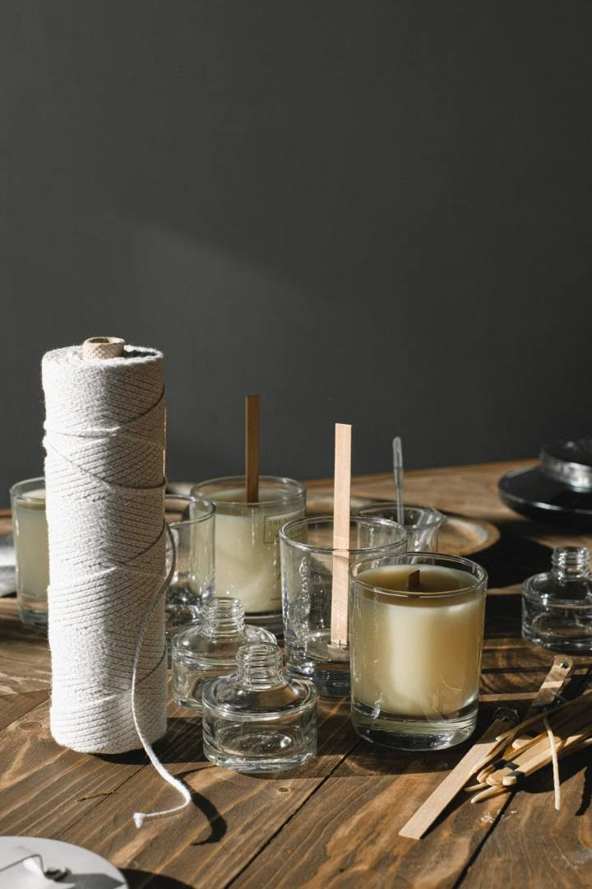
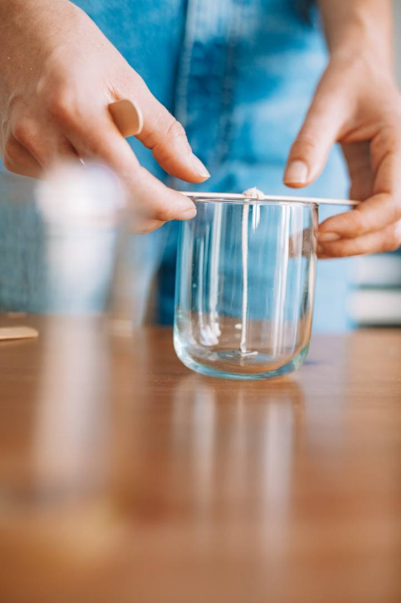
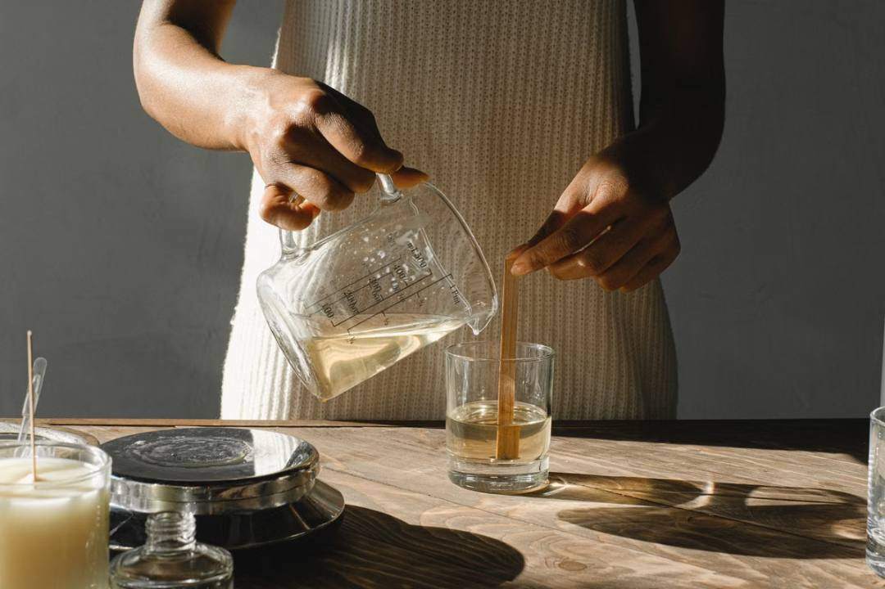
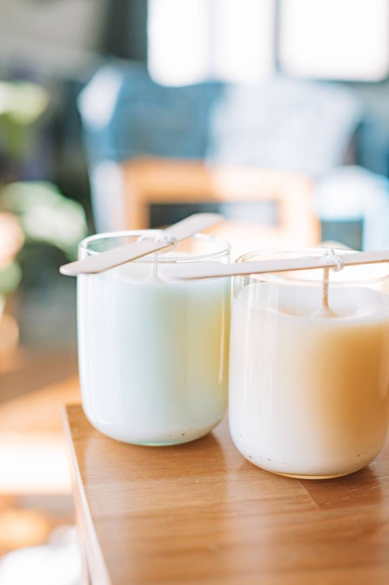
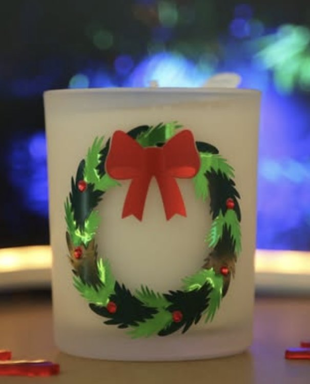

Step 1
Melt the soy, low and slow
Natural soy wax flakes go into a pouring pot over gentle heat. Rushing it scorches the wax, so this part takes patience.
Heated to 185°FEvery So Familiar candle is made by hand, one order at a time. Scroll to see it happen, step by step.
Natural soy wax flakes go into a pouring pot over gentle heat. Rushing it scorches the wax, so this part takes patience.
Heated to 185°FFragrance oil is measured by weight and stirred in for two full minutes, so the scent binds to the wax instead of floating on top.
About 1 oz of fragrance per pound of waxA cotton wick is fixed to the center of the jar and held straight with a wick bar, so your candle burns evenly from the first light.
Centered and held straightOnce the wax cools to the right temperature, it’s poured slowly into the jar. Too hot and it cracks; too cool and it sets uneven.
Poured at 135°FThis is where the magic happens. Soy needs days, not hours, for the scent to settle in. That’s why your candle smells so strong when you light it.
Cured up to two weeksThe design goes on, the wick is trimmed, and your candle is wrapped and packed by the same hands that poured it.
Made with love, shipped to you





Pick a candle from the collections or design your own with a name, a date or your team’s colors.
Shop the collections